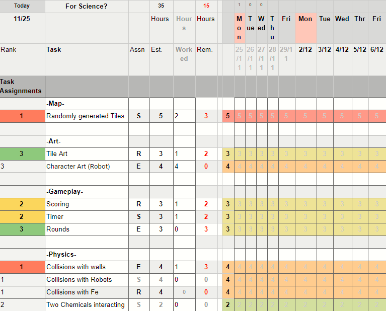

For Science Project Plan
Due to the arcadey, simplistic nature of the game, we In our first month, we plan to get a basic map working.This map will not be randomly generated and will only be used to test the basics of gameplay.
We will use basic sprites to be our robot get collisions working with wall and other robots. We will then bring in our basic Fe sprites and get collisons working will walls and other fe and robots. We will then playtest this basic structure.
In our second month, we plan to get the chemicals working. We will start with two chemicals to test the basics and add the other two when we are ready. We hope to also make sure that when the Fe and robots are hit by these chemicals the game/round will end.
In our third month, we hope to get the randomly generated tiles for the map working and make sure it doesn't lock in players at the beginning of the round and create too many dead ends. We also hope to start working on rounds, so when the player is hit by a chemical they are put back to the start. We will also have another playtest now to make sure the game is enjoyable and working.
In our fourth month, we hope to finalize all the art. This includes the background for each location, tile maps that can be used for each location, the Fe for each player and the robot for each player. We will then conduct a final playtest to properly balance out the game. Our game will then be ready to ship.
